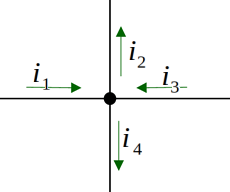
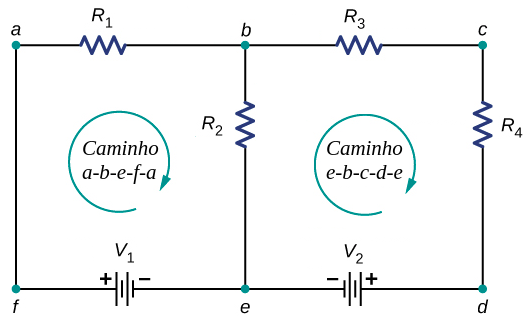

Aula10-83: Leis de Kirchhoff
Leis de Kirchhoff
As leis de Kirchhoff são duas regras que dizem respeito à natureza dos circuitos elétricos. Conhecendo-as, temos em mãos uma potente ferramenta de análise desses circuitos.
-
Primeira lei de Kirchhoff (lei dos nós): chamamos de nó todo ponto de conexão entre três ou mais condutores. Segundo essa regra, toda a corrente que chega a um nó sai dele.

-
Segunda lei de Kirchhoff (lei das malhas): chamamos de malha um caminho que, partindo de um ponto A do circuito, retorna ao mesmo ponto; malha é, portanto, um caminho fechado em um circuito. Segundo a segunda lei de Kirchhoff, toda a energia adquirida ao longo do caminho é perdida antes de se chegar de volta ao ponto A de partida.
Ou seja: percorrendo o caminho no sentido da corrente, sempre que encontrarmos um gerador, devemos contabilizar a tensão gerada por ele como um acréscimo de energia ao sistema; sempre que encontrarmos uma resistência, devemos contabilizar a tensão sobre ela como um decréscimo de energia ao sistema.
